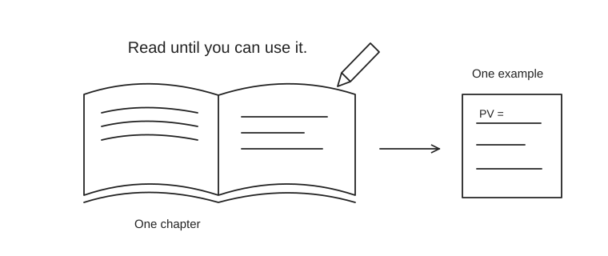

Books, in a useful order
Do not buy nine books at once. Start with OpenStax or Financial Intelligence, use CFA’s current curriculum for the exam, and add a specialist reference when a project needs it. The reading order below is a recommendation.

| When | Book / source | Access | How to use it | Output |
|---|---|---|---|---|
| Start | Principles of Finance · OpenStax | Free web/PDF | Read statements, time value, bonds, shares and capital budgeting. Solve the exercises before coding a model. | Explain how a profitable firm can run short of cash. |
| Exam spine | CFA Program curriculum · 2027 | Digital access with registration; print options paid | Use the learning outcomes and questions for your exam year. General finance books do not replace ethics, syllabus details or exam practice. | Keep an error log by learning outcome. |
| Business judgment | Financial Intelligence · Berman, Knight & Case | Paid / library | An accessible manager’s view of financial statements, assumptions and business ratios. Read alongside one real annual report. | Explain a margin change to a non-finance manager. |
| Valuation | Investment Valuation · Aswath Damodaran | Book paid; author materials free | Use as a reference after accounting and discounting. Start with cash flows, growth, discount rates and relative valuation. | Produce a valuation range and state what changes it. |
| Portfolio depth | Investments · Bodie, Kane & Marcus | Paid / library | Study diversification, asset pricing, fixed income and performance. A substantial reference, not another cover-to-cover obligation before Level I. | Explain benchmark-relative performance. |
| Risk specialization | Options, Futures, and Other Derivatives · John Hull | Paid / library | Begin with forwards, futures, option payoffs and hedging. Save stochastic models for a role that needs them. | Draw a hedge payoff and identify basis risk. |
| Communication | Storytelling with Data · Cole Nussbaumer Knaflic | Books paid; site examples free | Read while building your first business presentation. Practice audience, chart choice, visual hierarchy and the requested action. | Replace a dashboard tour with one decision slide. |
| Applied ML | Machine Learning for Trading · Stefan Jansen | Book paid; companion repository public | Use the author’s current repository for project structure and data workflows. Pin your environment; older editions use older APIs. | Reproduce a baseline with transaction costs and a clean test split. |
| Advanced / optional | Advances in Financial Machine Learning · Marcos López de Prado | Paid / library | Read after you can explain leakage, labels and model selection. Prioritize validation and research design over sophisticated algorithms. | Write a backtest audit before increasing model complexity. |
A workable reading rule
Read for 30 minutes, solve or model for 30, then explain the result in five sentences. Stop adding resources when the bottleneck is practice. Older editions can teach stable fundamentals, but CFA preparation must match the 2027 learning outcomes.
Next: free courses or the finance foundations.